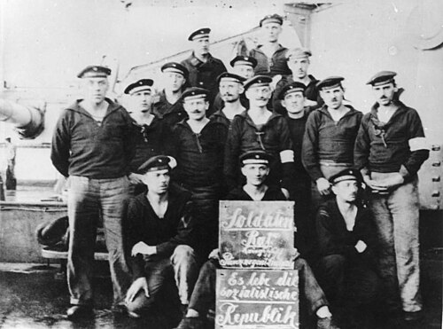
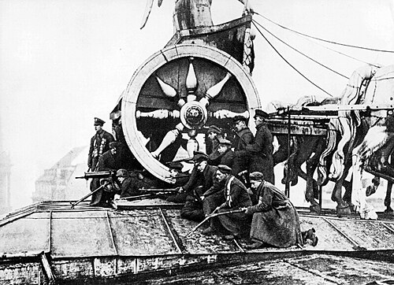
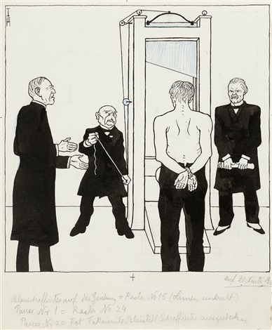
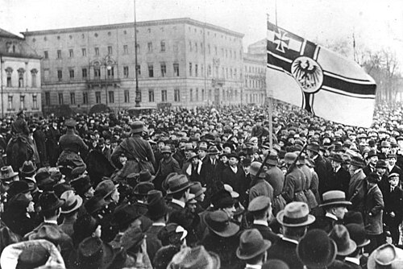
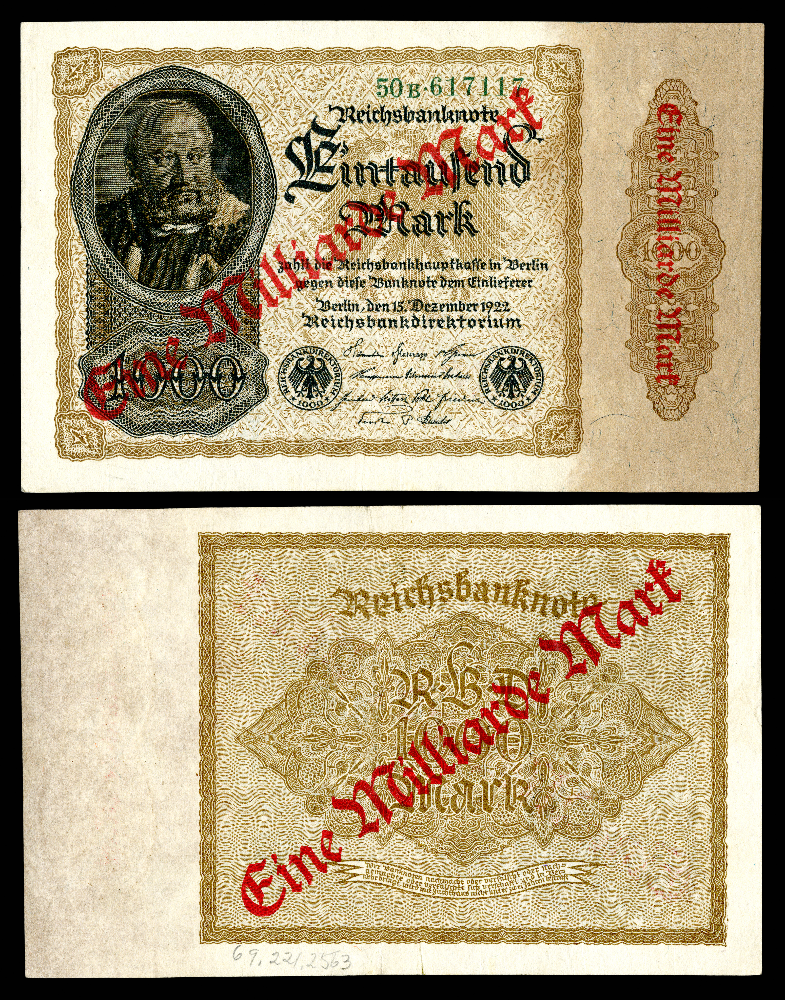
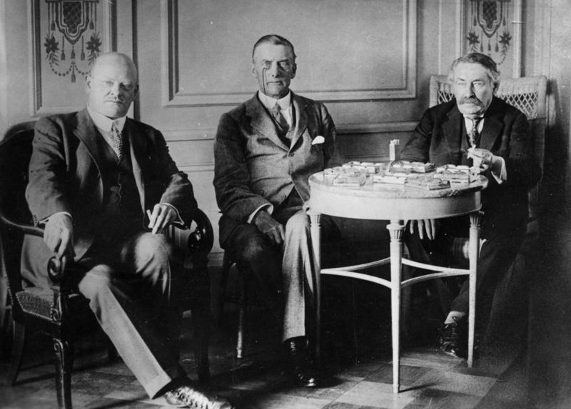
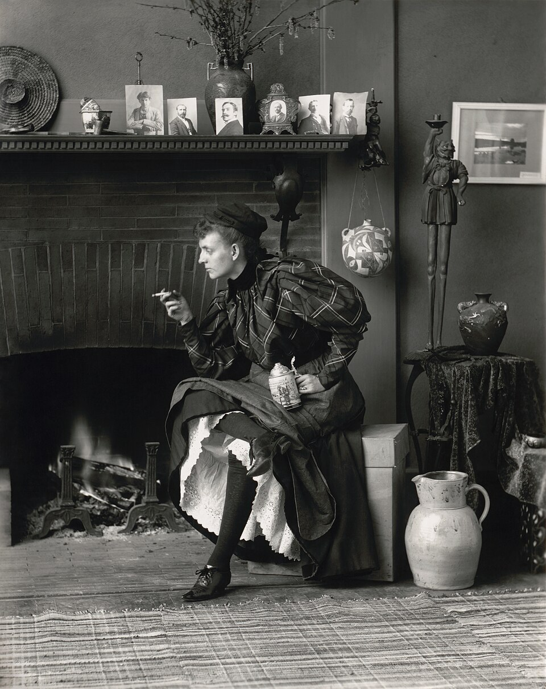

Key Topic 1: The Weimar Republic
Paper 3: Weimar and Nazi Germany, 1918-39
Course Textbook
Enquiry: From Democracy to Dictatorship: How did Hitler destroy the Weimar Republic?
Contents
|
Lesson 1: KT1.1: The Origins of the Republic, 1918–1919
|
|
|
Lesson 2: KT1.2: Early Challenges to the Republic, 1919–1923
|
|
|
Lesson 3: KT1.3: The Recovery of the Republic, 1924–1929
|
|
|
Lesson 4: KT1.4: Changes in Society, 1924–1929
|
|
L1: KT1.1: The Origins of the Republic, 1918–1919[[SRC_MARKER:L0_Start]]
Learning Objectives
Explain how military collapse and civilian starvation forced German leaders to seek an immediate armistice in 1918.
Analyse why the Kiel Mutiny sparked a nationwide revolution that forced Kaiser Wilhelm II to abdicate.
Assess how Friedrich Ebert established the provisional government and secured the army’s loyalty via the Ebert-Groener Pact.
Examine why the National Assembly met in Weimar to draft the new democratic constitution in early 1919.
Evaluate the structural strengths and fatal vulnerabilities of the 1919 Weimar Constitution, focusing on Proportional Representation and Article 48.
Recall & Retrieval
1. What was the Triple Entente in the First World War?
2. What was the Triple Alliance?
3. What is a 'dictatorship'?
4. What is a 'democracy'?
5. What does 'abdicate' mean?
6. What is a 'republic'?
7. What does 'inflation' mean?
8. What is an 'armistice'?
9. What does 'mutiny' mean?
10. In what year did the First World War begin?
Vocabulary Check
The Odd One Out: Circle ONE term that does not belong with the others. Explain your reasoning: What historical connection links the other terms, and why is your chosen term different?
Reichstag | Reichsrat | Armistice | Constitution | Dolchstoßlegende | November Criminals | Proportional Representation (PR) | Coalition Government | Article 48
Teacher Model / Pupil Reasoning:
[[SRC_MARKER:L0_Source_3]]
Source S1: Mutiny of German Sailors at Kiel (October–November 1918)

German sailors from the High Seas Fleet mutinying at Kiel in late October 1918, refusing suicidal orders to attack the Royal Navy and establishing revolutionary councils.
[1.1] (Source A) By autumn 1918, Imperial Germany faced total military and economic collapse. Four years of total war had tripled national debt to 150 billion marks, with two million soldiers dead. On the home front, the British naval blockade caused severe starvation: over 750,000 civilians died during the "Turnip Winter." Generals Hindenburg and Ludendorff warned the Kaiser that the war was lost.
[1.2] The breaking point occurred in late October 1918. When naval commanders ordered a suicidal sortie against the British fleet, sailors at Wilhelmshaven and Kiel mutinied. Refusing to die for a lost cause, sailors and workers established revolutionary councils across major cities. Military discipline broke down completely, and the Kaiser’s authority evaporated.
[2.1] By early November 1918, revolutionary general strikes brought Berlin to a standstill. Soldiers refused to fire upon marching workers. Recognizing that US President Wilson would not negotiate with an imperial autocrat, Chancellor Prince Max of Baden announced the Kaiser’s abdication on 9 November without Wilhelm’s consent.
[2.2] Abandoned by his generals, Kaiser Wilhelm II fled into Dutch exile on 10 November. Inside the Reichstag, Social Democrat (SPD) leader Philipp Scheidemann rushed to a window and proclaimed a democratic republic. His hasty announcement pre-empted communist leader Karl Liebknecht, who was preparing to declare a Soviet-style communist state.
[[SRC_MARKER:L0_Source_5]]
Source S2: Armed Workers and Soldiers in Berlin during the German Revolution (November 1918)

Armed revolutionary soldiers and industrial workers manning barricades in Berlin following the Kaiser’s abdication, showing the revolutionary chaos confronting Friedrich Ebert’s provisional government.
[3.1] SPD leader Friedrich Ebert took office as Chancellor, heading a six-man provisional cabinet. On 11 November 1918, German delegates signed the Armistice in France, ending the First World War under humiliating surrender terms, including forfeiting all submarines and heavy artillery.
[3.2] Facing armed street militias (Source B), Ebert concluded the secret Ebert-Groener Pact with the army leadership. General Groener promised military loyalty to restore civil order, provided Ebert defended the army from communist revolution and preserved the imperial officer corps.
[4.1] In January 1919, national elections saw an 83% turnout, with moderate pro-democracy parties winning 76% of Reichstag seats. Because street fighting raged in Berlin following the Spartacist Uprising, the 421 delegates convened in the peaceful cultural town of Weimar on 6 February 1919.
[4.2] Meeting inside the German National Theatre, the assembly elected Friedrich Ebert as President. Under liberal lawyer Hugo Preuss, the assembly spent six months drafting a modern democratic constitution designed to replace imperial autocracy with transparent parliamentary government.
[[SRC_MARKER:L0_Source_7]]
Source S3: Opening Session of the National Assembly in Weimar (February 1919)
Elected delegates assembling inside the Deutsches Nationaltheater in Weimar on 6 February 1919 to draft the new democratic constitution away from political violence in Berlin.
[5.1] (Source C) Passed in August 1919, the Weimar Constitution created a progressive democracy. It gave all men and women over twenty the vote, protected free speech and religious liberty, and made the Chancellor accountable to an elected Reichstag. The President was elected every seven years.
[5.2] However, the constitution contained fatal flaws. Proportional Representation allowed twenty-eight tiny splinter parties to gain seats, preventing single-party majorities and forcing twenty weak coalition cabinets between 1919 and 1933. Furthermore, Article 48 allowed the President to rule by decree in emergencies, creating a dictatorial loophole.
Pair & Share Activity
Q1. Discuss with your partner: Was the Weimar Republic doomed from the start?
The 'But/Because/So' Strategy
Q2. Complete these three sentences with historically accurate details:
1) Proportional Representation was highly democratic, BUT...
2) Philipp Scheidemann rushed to declare a Republic BECAUSE...
3) The army felt betrayed by the Armistice, SO...
Vocabulary in Context
Q3. Write a 4-sentence summary of the birth of the Weimar Republic. You must use all five of these keywords correctly: Autocracy, Dolchstoßlegende, November Criminals, Armistice, Reichstag.
Causal Linkage
Q4. Write a short paragraph explaining exactly how the British Naval Blockade eventually led to the Abdication of the Kaiser. You must explain the chain reaction of events (the 'domino effect') that connects them.
Q5. Prioritising Causes (The Diamond Ranking Challenge): You have been given four reasons why the Weimar Republic was highly unstable in 1919:
- The legacy of the First World War
- The 'Stab-in-the-back' myth
- Proportional Representation
- Article 48
Rank these four causes in order of importance. Write a persuasive, open-ended paragraph justifying your #1 choice over your #2 choice.
Level 9 Challenge: In your paragraph, use complex causal reasoning to explicitly explain how your #1 cause directly triggered or worsened your #2 cause.
[[SRC_MARKER:L0_Source_0]]
Source S4: Mutiny of German Sailors at Kiel (October–November 1918)
German sailors from the High Seas Fleet mutinying at Kiel in late October 1918, refusing suicidal orders to attack the Royal Navy and establishing revolutionary councils.
[[SRC_MARKER:L0_Source_1]]
Source S5: Armed Workers and Soldiers in Berlin during the German Revolution (November 1918)
Armed revolutionary soldiers and industrial workers manning barricades in Berlin following the Kaiser’s abdication, showing the revolutionary chaos confronting Friedrich Ebert’s provisional government.
[[SRC_MARKER:L0_Source_2]]
Source S6: Opening Session of the National Assembly in Weimar (February 1919)
Elected delegates assembling inside the Deutsches Nationaltheater in Weimar on 6 February 1919 to draft the new democratic constitution away from political violence in Berlin.
GCSE Exam Practice
Q6. 1. Give two things you can infer from Source A about the establishment of the Weimar Republic in November 1918. [4 marks]
Q7. 2. Explain why Kaiser Wilhelm II was forced to abdicate in November 1918. [12 marks]
L2: KT1.2: Early Challenges to the Republic, 1919–1923[[SRC_MARKER:L1_Start]]
Learning Objectives
Explain how the Treaty of Versailles and the "stab-in-the-back" myth alienated German nationalists from the Republic.
Analyse the Spartacist Uprising of January 1919 and the consequences of Ebert’s reliance on the Freikorps.
Evaluate the Kapp Putsch of March 1920 and explain why General von Seeckt’s army refused to defend the government.
Examine the wave of right-wing political assassinations and the profound judicial bias in Weimar courts.
Assess how the French occupation of the Ruhr and the policy of passive resistance triggered catastrophic hyperinflation in 1923.
Recall & Retrieval
1. When did the First World War end?
2. Who was the Kaiser of Germany during WW1?
3. Why did the Kaiser abdicate?
4. What was the 'stab in the back' myth (Dolchstoßlegende)?
5. Who were the 'November Criminals'?
6. What is a 'democracy'?
7. What is a 'republic'?
8. What does 'mutiny' mean?
9. What was the Triple Entente?
10. What does 'abdicate' mean?
Vocabulary Check
The Golden Sentence: Choose TWO terms from the word bank. Write ONE grammatically sophisticated, historically accurate sentence connecting them using a causal conjunction (because, although, or consequently):
Diktat | Reparations | Spartacist League | Freikorps | Putsch | Passive Resistance | Hyperinflation
Teacher Model / Pupil Sentence:
[[SRC_MARKER:L1_Source_3]]
Source S1: The "Stab in the Back" (Dolchstoßlegende) (1919)

Austrian and German right-wing postcard depicting the "Stab in the Back" (Dolchstoßlegende), claiming a heroic German soldier was betrayed from behind by home-front politicians.
[1.1] In May 1919, the German delegation arrived at Versailles expecting a negotiated peace based on Woodrow Wilson’s Fourteen Points. Instead, they were barred from talks and handed a non-negotiable Diktat (Source A). If Germany refused to sign within five days, Allied armies would invade.
[1.2] The territorial losses were crippling: Germany lost 13% of its European territory, 12% of its population, 16% of its coalfields, and 48% of its iron ore. Alsace-Lorraine was returned to France, the "Polish Corridor" severed East Prussia from Germany, and all overseas colonies were confiscated.
[2.1] The military terms stripped Germany of its defensive capacity. The army was slashed to 100,000 volunteers, with conscription abolished. The General Staff was banned, armored tanks, military aircraft, and submarines were outlawed, and the navy was restricted to six small battleships.
[2.2] In addition, the western borderland of the Rhineland was permanently demilitarised and occupied by Allied troops. Stripped of heavy armaments and strategic fortifications, Germany felt defenseless against potential invasions by hostile European neighbours.
[[SRC_MARKER:L1_Source_5]]
Source S2: Freikorps Soldiers during the Kapp Putsch in Berlin (March 1920)

Armed Freikorps soldiers of the Marinebrigade Ehrhardt occupying government ministries in Berlin during the right-wing Kapp Putsch, March 1920.
[3.1] (Source B) Financial clauses provoked fury across Germany. Under Article 231 (The War Guilt Clause), Germany was forced to accept sole moral responsibility for causing the war. This legal clause provided the Allied justification for demanding astronomical financial reparations.
[3.2] In 1921, the Allied Reparations Commission fixed the total compensation bill at £6.6 billion (132 billion gold marks), payable in annual instalments of £100 million. Economists like John Maynard Keynes warned that these impossible demands would impoverish Central Europe and poison international relations.
[4.1] National humiliation spawned the dangerous Dolchstoßlegende ("stab-in-the-back" myth). Military commanders Hindenburg and Ludendorff claimed the German army was "undefeated in the field" and was betrayed from behind by socialist, liberal, and Jewish politicians in Berlin.
[4.2] Right-wing nationalists branded the republican ministers who signed the armistice and treaty the "November Criminals." This corrosive myth permanently alienated military officers, judges, and conservative civil servants from the Weimar democracy.
[[SRC_MARKER:L1_Source_7]]
Source S3: A One-Trillion-Mark Banknote Issued during Hyperinflation (November 1923)

A 1,000,000,000,000 (one trillion / Eine Billion) Mark banknote issued by the German Reichsbank in Berlin during the peak of hyperinflation in November 1923.
[5.1] (Source C) The treaty inflicted permanent geopolitical scars. The division of Germany by the Polish Corridor created lasting friction with Poland, while banning union with Austria (Anschluss) left millions of German-speakers outside the republic’s borders.
[5.2] Rather than pacifying Europe, Versailles created an enduring grievance that extremists exploited for twenty years. By linking the new democracy directly to national shame and economic ruin, the treaty critically weakened Weimar’s foundations from its first days.
Pair & Share Activity
Q1. Discuss with your partner: Which was the greater threat to the Republic: the extreme Left (Spartacists) or the extreme Right (Kapp)?
The 'But/Because/So' Strategy
Q2. Complete the following sentences based on the lesson's narrative, explaining the cause-and-effect relationships:
1. The Treaty of Versailles was deeply unpopular in Germany, BUT...
2. The Weimar Republic faced numerous challenges from both the left and the right BECAUSE...
3. The Ruhr Crisis and the policy of Passive Resistance led to Hyperinflation, SO...
Vocabulary in Context
Q3. Write a short paragraph (3-5 sentences) explaining the interconnectedness of the terms: *Diktat*, *Reparations*, *Passive Resistance*, and *Hyperinflation* in the context of the Weimar Republic's early challenges.
Prioritising Causes
Q4. Of the challenges discussed in the lesson (Treaty of Versailles/Reparations, political uprisings like the Spartacist Uprising and Kapp Putsch, and the Ruhr Crisis/Hyperinflation), which do you think was the *most* damaging to the Weimar Republic's stability between 1919-1923 and why? Justify your choice with specific details.
Counter-Factual History
Q5. Imagine the Weimar Republic had successfully negotiated a significantly reduced reparations payment in 1920, avoiding the Ruhr Crisis and subsequent Hyperinflation. How might the political landscape of Germany have evolved differently by 1923, particularly concerning the rise of extremist groups like the Nazi Party?
[[SRC_MARKER:L1_Source_0]]
Source S4: The "Stab in the Back" (Dolchstoßlegende) (1919)
Austrian and German right-wing postcard depicting the "Stab in the Back" (Dolchstoßlegende), claiming a heroic German soldier was betrayed from behind by home-front politicians.
[[SRC_MARKER:L1_Source_1]]
Source S5: Freikorps Soldiers during the Kapp Putsch in Berlin (March 1920)
Armed Freikorps soldiers of the Marinebrigade Ehrhardt occupying government ministries in Berlin during the right-wing Kapp Putsch, March 1920.
[[SRC_MARKER:L1_Source_2]]
Source S6: A One-Trillion-Mark Banknote Issued during Hyperinflation (November 1923)
A 1,000,000,000,000 (one trillion / Eine Billion) Mark banknote issued by the German Reichsbank in Berlin during the peak of hyperinflation in November 1923.
GCSE Exam Practice
Q6. 1. How useful is Source B for an enquiry into the impact of hyperinflation on German society in 1923? [6 marks]
Q7. 2. Explain why the Treaty of Versailles caused significant challenges for the Weimar Republic in the years 1919–1923. [12 marks]
L3: KT1.3: The Recovery of the Republic, 1924–1929[[SRC_MARKER:L2_Start]]
Learning Objectives
Explain how Gustav Stresemann halted passive resistance and stabilized the currency with the Rentenmark in late 1923.
Analyse the mechanisms of the Dawes Plan (1924) and the impact of American loans on German industrial recovery.
Evaluate the diplomatic significance of the 1925 Locarno Treaties in breaking Germany’s post-war international isolation.
Assess the political impact of Germany’s entry into the League of Nations with a permanent Council seat in 1926.
Assess the Young Plan of 1929 and explain why Stresemann warned that Germany was "dancing on a volcano".
Recall & Retrieval
1. What was the Weimar Constitution?
2. What was Proportional Representation (PR)?
3. Why was Proportional Representation a weakness?
4. What was Article 48?
5. Who was the first President of the Weimar Republic?
6. What was the 'stab in the back' myth?
7. Who were the 'November Criminals'?
8. When did WW1 end?
9. What is an 'armistice'?
10. What does 'inflation' mean?
Vocabulary Check
Conceptual Classification: Categorise the terms from the word bank into the two historical boxes below:
Rentenmark | Reichsmark | Dawes Plan (1924) | Young Plan (1929) | Locarno Pact (1925) | League of Nations | Kellogg-Briand Pact (1928)
Power, Governance & Warfare
Economy, Trade & Society
[[SRC_MARKER:L2_Source_3]]
Source S1: The Currency Collapse Preceding the Rentenmark (1923)
A trillion-mark note from late 1923 illustrating the catastrophic monetary collapse that Gustav Stresemann resolved by introducing the Rentenmark.
[1.1] (Source A) In January 1919, left-wing revolutionaries launched the Spartacist Uprising in Berlin. Led by Rosa Luxemburg and Karl Liebknecht, 100,000 workers seized newspaper offices and government buildings, aiming to establish a communist council republic modeled on Russia.
[1.2] Lacking army troops, Chancellor Ebert deployed the Freikorps—paramilitary units of demobilized nationalist soldiers. Armed with machine guns, the Freikorps brutally crushed the uprising, executing Liebknecht and Luxemburg without trial, creating permanent hatred between socialists and communists.
[2.1] Right-wing paramilitaries soon turned against the republic. In March 1920, when the government attempted to disband the Erhardt naval brigade under Versailles terms, 5,000 Freikorps troops marched on Berlin in the Kapp Putsch, installing civil servant Wolfgang Kapp as Chancellor.
[2.2] Army Chief General von Seeckt refused to defend the government, stating: "Reichswehr does not fire on Reichswehr." Ebert fled to Stuttgart and called a nationwide general strike. Millions of workers cut off water, gas, and rail, collapsing the putsch within four days.
[[SRC_MARKER:L2_Source_5]]
Source S2: Gustav Stresemann at the Locarno Conference (October 1925)

German Foreign Minister Gustav Stresemann seated alongside British Foreign Secretary Austen Chamberlain and French Prime Minister Aristide Briand at Locarno, October 1925.
[3.1] (Source B) In January 1923, after Germany missed coal deliveries, 60,000 French and Belgian troops marched into the industrial Ruhr Valley, seizing factories, steel mills, and railways to extract reparations by force.
[3.2] The government ordered passive resistance: two million miners and railwaymen went on strike while the government paid their wages. French troops responded brutally, killing 132 civilians and expelling 150,000 residents from their homes, paralyzing Germany’s industrial heartland.
[[SRC_MARKER:L2_Source_6]]
Source S3: Germany’s Admission to the League of Nations in Geneva (September 1926)
The Assembly of the League of Nations in Geneva welcoming the German delegation led by Gustav Stresemann as a permanent Council member in September 1926.
[4.1] To pay striking Ruhr workers and replace lost tax revenue, the government printed trillions of paper marks. This uncontrolled printing triggered catastrophic hyperinflation: by November 1923, a loaf of bread cost 201 billion marks (Source C).
[4.2] Money lost all practical value; workers carried wages in wheelbarrows, while restaurants changed menu prices hourly. While industrialists paid off mortgage debts with worthless paper, the thrifty middle classes saw their life savings completely erased.
[5.1] Hyperinflation created clear economic winners and losers. Industrialists and mortgage-holders easily cleared debts, while farmers sold produce for barter. Conversely, pensioners, war widows, and middle-class savers on fixed incomes were plunged into destitution.
[5.2] The psychological devastation was permanent. The German middle class felt betrayed by democracy, losing faith in republican institutions and becoming receptive to extremist promises of national revival and economic vengeance.
Pair & Share Activity
Q1. Discuss with your partner: Was Stresemann's recovery a true Golden Age or just a mirage?
The 'But/Because/So' Strategy
Q2. Complete the following sentences based on the lesson: 1) Germany's economy experienced a period of recovery and stability between 1924 and 1929, BUT... 2) Gustav Stresemann was a pivotal figure in Germany's recovery BECAUSE... 3) Germany regained significant international standing SO...
Vocabulary in Context
Q3. Using at least three of the keywords (Rentenmark, Reichsmark, Dawes Plan, Young Plan, Locarno Pact, League of Nations, Kellogg-Briand Pact), write a short paragraph explaining how Germany achieved both economic stability and improved international relations during the 'Golden Twenties'.
Causal Linkage
Q4. Explain the causal link between Germany's economic recovery and its ability to achieve foreign policy successes between 1924 and 1929. How did one directly enable the other?
Complex Causal Reasoning
Q5. To what extent was Germany's 'recovery' between 1924 and 1929 a genuine and sustainable improvement, or was it built on fragile foundations? Argue both sides, considering the interconnectedness of economic, political, and foreign policy factors.
[[SRC_MARKER:L2_Source_0]]
Source S4: The Currency Collapse Preceding the Rentenmark (1923)
A trillion-mark note from late 1923 illustrating the catastrophic monetary collapse that Gustav Stresemann resolved by introducing the Rentenmark.
[[SRC_MARKER:L2_Source_1]]
Source S5: Gustav Stresemann at the Locarno Conference (October 1925)
German Foreign Minister Gustav Stresemann seated alongside British Foreign Secretary Austen Chamberlain and French Prime Minister Aristide Briand at Locarno, October 1925.
[[SRC_MARKER:L2_Source_2]]
Source S6: Germany’s Admission to the League of Nations in Geneva (September 1926)
The Assembly of the League of Nations in Geneva welcoming the German delegation led by Gustav Stresemann as a permanent Council member in September 1926.
GCSE Exam Practice
Q6. 3(a) Part 1: Content & Provenance (COP) Comparative Analysis for Sources B & C. [4 marks]
Q7. 3(a). How useful are Sources B and C for an enquiry into the economic recovery of the Weimar Republic in the years 1924–1929? [8 marks]
L4: KT1.4: Changes in Society, 1924–1929[[SRC_MARKER:L3_Start]]
Learning Objectives
Explain how rising real wages, municipal housing programs, and the 1927 Unemployment Insurance Act improved working-class living standards.
Analyse the progress and persistent limitations experienced by women in politics, the workforce, and the emergence of the "New Woman".
Evaluate how Walter Gropius and the Bauhaus movement revolutionized modernist architecture and functional design.
Examine how Neue Sachlichkeit painting and Weimar cinema reflected the gritty realities and moral ambiguities of the Republic.
Assess why the avant-garde culture of Berlin provoked fierce moral and political backlash from conservative, rural, and nationalist Germans.
Recall & Retrieval
1. Which treaty punished Germany after WW1?
2. How much was Germany forced to pay in reparations?
3. What was Article 231?
4. How was the German army restricted by the Treaty?
5. What happened to the Rhineland?
6. What was Proportional Representation?
7. What was Article 48?
8. Who were the November Criminals?
9. Who was Friedrich Ebert?
10. What is a 'dictatorship'?
Vocabulary Check
Spot the Deliberate Error: Read the statement below. One historical fact or vocabulary concept has been deliberately falsified. Underline the error and explain the accurate historical reality below:
Standard of Living | Unemployment Insurance Act (1927) | New Woman (Neue Frau) | Article 109 | Avant-garde | New Objectivity (Neue Sachlichkeit) | Bauhaus
"Under Article 109 of the Weimar Constitution, the German government outlawed the New Woman and banned all Bauhaus architecture to prevent improvements in the Standard of Living."
Teacher Model / Historical Correction:[1.1] In August 1923, President Ebert appointed Gustav Stresemann as Chancellor. Recognizing that Germany was disintegrating under hyperinflation, Stresemann ended passive resistance in the Ruhr, opening the path to negotiations with France.
[1.2] In November 1923, financial commissioner Hjalmar Schacht destroyed the old marks and issued the Rentenmark, backed by mortgages on German agricultural and industrial land. Exchanged at one Rentenmark for one trillion old marks, the stable currency halted hyperinflation overnight.
[[SRC_MARKER:L3_Source_4]]
Source S1: The "New Woman" of the Golden Twenties in Berlin (c. 1926)

A fashionable young German woman in Berlin sporting the signature short bob hairstyle (Bubikopf), modern apparel, and smoking in public, embodying the emancipated "New Woman" of the Weimar era.
[2.1] (Source A) In 1924, Stresemann negotiated the Dawes Plan with American banker Charles Dawes. Annual reparations payments were reduced to £50 million, and US financiers agreed to loan Germany 800 million gold marks to rebuild infrastructure.
[2.2] In 1929, the Young Plan cut reparations from £6.6 billion to £2 billion, extending payment across fifty-nine years. However, right-wing nationalists attacked the agreement for committing future generations to pay Allied debts.
[[SRC_MARKER:L3_Source_5]]
Source S2: The Bauhaus Architectural Complex in Dessau (1925–1926)
The Bauhaus building in Dessau, designed by Walter Gropius, embodying modernist architecture with its innovative steel-frame construction and expansive glass curtain walls.
[3.1] (Source B) In foreign diplomacy, Stresemann pursued reconciliation. Under the 1925 Locarno Pact, Germany voluntarily guaranteed its western borders with France and Belgium, reassuring European powers and leading to Allied evacuation of the Rhineland.
[3.2] Diplomatic reintegration followed: Germany entered the League of Nations with a permanent council seat in 1926, and signed the 1928 Kellogg-Briand Pact renouncing war. Stresemann was awarded the Nobel Peace Prize.
[[SRC_MARKER:L3_Source_6]]
Source S3: Golden Twenties Modernist Culture in Weimar Berlin
Expressionist representation of Golden Twenties cabaret culture and artistic experimentation in Weimar Berlin, capturing both creative vibrancy and social polarization.
[4.1] In the arts, the Weimar era fostered an avant-garde cultural revolution. Berlin became the creative capital of Europe, celebrated for modernist literature, satirical theatre, and Fritz Lang’s cinema masterpiece Metropolis.
[4.2] Walter Gropius founded the Bauhaus school of architecture in Dessau (Source C), championing functional geometric design. Meanwhile, expressionist painters Otto Dix and George Grosz produced unflinching satirical portraits of postwar German society.
[5.1] Industrial workers experienced tangible gains: real wages rose by 12% in 1928, and the 1927 Unemployment Insurance Act provided sickness and job benefits to 16.4 million employees. Over two million modern homes were constructed.
[5.2] However, recovery rested on precarious foundations. As Stresemann warned before his death in 1929, Germany was "dancing on a volcano": economic growth relied entirely on short-term US loans that could be recalled at any moment.
Pair & Share Activity
Q1. Discuss with your partner: Did the changes in society (1924-1929) benefit all Germans equally?
The 'But/Because/So' Strategy
Q2. Complete the following sentences based on the provided text: 1) The standard of living generally improved in Germany between 1924-1929 BUT... 2) The 'New Woman' became a prominent figure in Weimar society BECAUSE... 3) Weimar culture saw an explosion of avant-garde movements SO...
Vocabulary in Context
Q3. Using at least FOUR of the provided keywords (Standard of Living, Unemployment Insurance Act (1927), New Woman (Neue Frau), Article 109, Avant-garde, New Objectivity (Neue Sachlichkeit), Bauhaus), write a short paragraph (approx. 70-100 words) explaining how society changed in Weimar Germany between 1924 and 1929.
Causal Linkage
Q4. Explain the causal links between Germany's economic stability (1924-1929), the emergence of the 'New Woman', and the flourishing of avant-garde culture. How did these three elements influence each other?
Counter-Factual History
Q5. Imagine the 'Golden Age' of Weimar Germany (1924-1929) never happened, and instead, economic instability and high unemployment persisted throughout the decade. How might the development of the 'New Woman' and the flourishing of avant-garde culture have been significantly different, or even stifled? Provide specific reasons and examples.
[[SRC_MARKER:L3_Source_0]]
Source S4: The "New Woman" of the Golden Twenties in Berlin (c. 1926)
A fashionable young German woman in Berlin sporting the signature short bob hairstyle (Bubikopf), modern apparel, and smoking in public, embodying the emancipated "New Woman" of the Weimar era.
[[SRC_MARKER:L3_Source_1]]
Source S5: The Bauhaus Architectural Complex in Dessau (1925–1926)
The Bauhaus building in Dessau, designed by Walter Gropius, embodying modernist architecture with its innovative steel-frame construction and expansive glass curtain walls.
[[SRC_MARKER:L3_Source_2]]
Source S6: Golden Twenties Modernist Culture in Weimar Berlin
Expressionist representation of Golden Twenties cabaret culture and artistic experimentation in Weimar Berlin, capturing both creative vibrancy and social polarization.
GCSE Exam Practice
Q6. 3(b). Study Interpretations 1 and 2. They give different views about the position of women in the Weimar Republic. What is the main difference between these views? [4 marks]
Q7. 3(d). How far do you agree with Interpretation 2 about the position of women in the Weimar Republic? Explain your answer, using both interpretations and your knowledge of the historical context. [16 marks]
Generated: 2026-10-19 15:36:42 UTC | Unit: weimar_nazi_germany